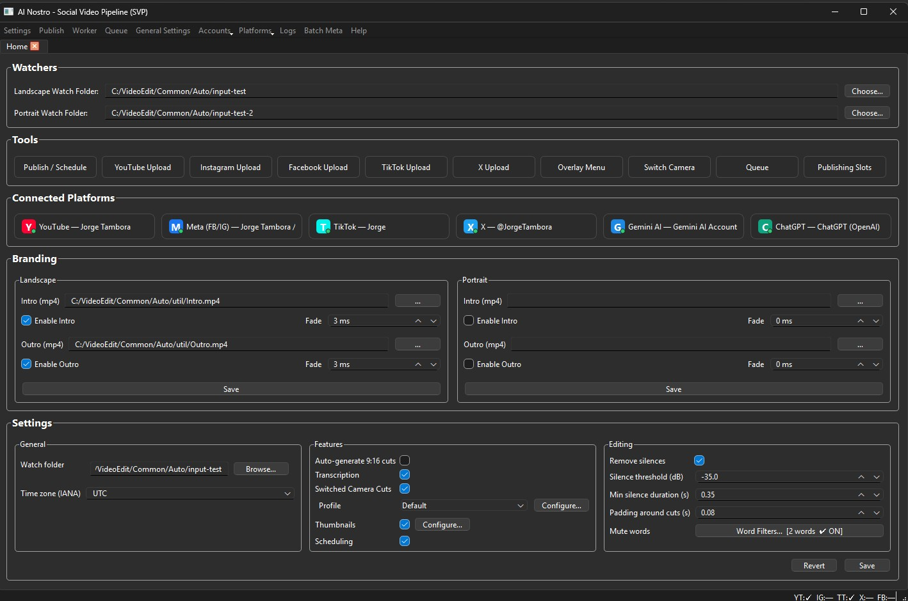

Al Nostro Social Video Pipeline (SVP)
The ultimate desktop pipeline for automating video transcription, dynamic portrait cropping with face and object tracking, and scheduling directly to your favorite social feeds.

Smart 9:16 Cropping
Automatically track speakers or custom objects (like instruments) to generate perfectly framed portrait cuts for Shorts, Reels, and TikTok.
Direct Scheduling
Connect your YouTube, TikTok, Meta, and X accounts securely. Schedule your processed clips to auto-publish without leaving the app.
Local & Secure
SVP runs locally on your machine. Your credentials and videos never touch a central server, ensuring absolute privacy and security.
Cloud Backups
SVP integrates seamlessly with Google Drive and Microsoft OneDrive to securely and automatically back up your local database and application settings.